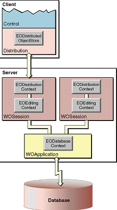

| PATH |

The classes specific to Java Client are found in the distribution
layers implemented in com.webobjects.eodistribution (both
client and server) and in the client's control and interface/application
layers (com.webobjects.eocontrol, com.webobjects.eoapplication, com.webobjects.eointerface and com.webobjects.eointerface.swing).
The major classes used in Java Client applications are depicted
in Figure 1-4.
Figure 1-4 Major classes in a Java Client application
The interface layer displays to the user the properties of the enterprise objects maintained in the control layer, using display groups and associations. Changes to the object graph are automatically synchronized with the user interface and user-entered data is automatically reflected in the object graph. The primary mechanisms behind this synchronization are display groups (EODisplayGroup) and associations (EOAssociation subclasses).
The interface layer is tightly integrated with the application layer. Java Client applications typically execute as stand-alone applications or as applets running in a browser. The application layer isolates the developer from the idiosyncrasies of each execution environment. It provides classes that are used to manage application-level data and resources, including arguments, defaults (transient and persistent), localization information, menu operations (like Save All and Quit), documents, user interface controls, and so on.
An additional layer, called the generation layer, is added to the client side in Direct to Java Client applications. It is used to dynamically generate user interface elements based on actions performed by the user and rules defined by the developer. For more on Direct to Java Client applications see Getting Started With Direct To Java Client.
The EOControl layer's primary responsibility is the management of the object graph through an EOEditingContext. This layer exists on both the client and server side of the application. It also implements faulting (on-demand fetching) and tracks editing changes.
These are the differences between the client and server layers:
The distribution layer is responsible for synchronizing the states of the object graphs on the client and on the application server in the middle tier. The distribution layer moves properties in both directions, that is, as it fetches objects and saves changes.
The distribution layer has a client side and a server side. The client side uses EODistributedDataSource and EODistributedObjectStore classes. The server side uses the EODistributionContext class.
The client-side distribution layer has several public classes. These are the main ones:
The server-side distribution layer has the EODistributionContext class. It encodes data to send to the client and decodes data it receives from the client over the distribution channel. It also keeps track of the state of the server-side object graph so it can communicate any changes to the client and thus synchronize the object graphs. The EODistributionContext (or its delegate) also validates remote invocations originating from client objects.
An additional server element used in the distribution layer
of the server is the WOJavaClientApplet component. It is used to
download and create an applet of class com.webobjects.eoapplication.EOApplet.
It has a dozen or so potential bindings, some general to applets
(such as codebase and size) and others specific to Java Client (such
as distribution-channel class and interface-controller class). These
bindings are used whether the client is executed as an applet or
an application. Therefore, a Java Client application is always configured
through a WOJavaClientApplet component.
© 2001 Apple Computer, Inc.